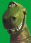
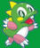

De: La Frikipedia, la enciclopedia extremadamente seria.
De: La Frikipedia, la enciclopedia extremadamente seria. De: La Frikipedia, la enciclopedia extremadamente seria.
| De la serie islas del mundo: | |||
| Parque Juriásico | |||
| |||
| Localización | |||
|---|---|---|---|
| País | Honduras | ||
| Archipiélago | Jurásico | ||
| Océano | Azul dinosaurio | ||
| Geografía | |||
| Superficie | 3000 metros cuadrados | ||
| Punto más alto | Volcán de la muerte | ||
| Geología | Rocas sintéticas | ||
| Demografía | |||
| Capital | Ciudad Dino | ||
| Población | 3 Personas | ||
| Gentilicio | Lagartejos | ||
| Otros datos | |||
| Presidente del cabildo | Reynosaurio | ||
| Municipios | Uno | ||
| | |||
Parque Jurásico es el nombre que adquirió popularmente la Isla de Formentera, más conocida como Isla Calaverilla (Aunque el algunas teorías indican que se encuentra en Asturies) una isla al sur de la Isla Hippy en el archipiélago balear. Lugar de retiro de Fraga en sus jornadas vacacionales. Hay que destacar que la isla está llena de dinosaurios.
Su economía se basa en las visitas que recibe actualmente ya que la isla tiene carácter de parque temático. Es como el zoo de Madrid, pero a lo bestia y sin las pilinguis de la casa de campo anexa a mencionado zoo.
La historia de esta isla comienza hace chonicientos millones de años en pleno periodo Jurásico cuando la isla Scaab se saturó de alemanes y el pobre Fraga no pudo pasar sus vacaciones en la isla más importante de islas Baleares. Así que hecho a nadar al sur y llego a la mencionada isla. Cual fue su sorpresa cuando descubrió que en la isla no era el único dinosaurio. Allí Fraga confraternizó con sus parientes más cercanos e incluso recibió algunas insinuaciones de otros dinosaurios, pero el gallego les dijó a todos:
Como Fraga tiene muy buen ojo para los negocios, tematizó la isla. Se pueden hacer visitas guiadas a esta isla pero hay que tener mucho cuidado porque Fraga podría atacarte en cualquier momento con su verborrea. La mujer que marea empezó a trabajar para crear una cadena de venta de dinosaurios como mascotas, pero al poco tiempo se aburrió y John Hammond compró el negocio. El primer parque fue inaugurado en 1988. Sin embargo, los dinosaurios se escapan y se comen a los turístas, aquello fue muy mala propaganda para el parque. El parque se volvió ha abrir, pero la manía de comerse a los turístas continuó y volvieron a cerrar.
Antes de ir a Parque Jurásico, probablemente deba llevar una o dos cosas, aquí se enumeran por su facilidad:
Aunque en las dos visitas guiadas que fueron a este parque se comieron a todos los turístas, tu irás. Ten preparado a los niños repipis para ofrecérselos a los depredadores y salvarte tu (En el nuevo parque ya los venden en la entrada enlatados). Cuando la rueda de tu Jeep pinche (Porque va a pinchar), baja con tu metralleta. ¿Por que no te he dicho que lleves rueda de repuesto?...Para que tenga más emoción tu excursión. Una voz por megafonía te dirá que no presiones los botones que hay en el coche...¡Hazle caso!. La puerta de la entrada se abrirá sola. Verás a tu derecha a King Kong bañándose en un rio, mientras un T-Rex te persigue. La aventura a comenzado.
Si miras a la izquierda mientras huyes del T-rex, verás otro reptil de esos comiéndose un cabra. A la derecha veá a un diplodocus comiéndose a un turísta chino. Usted dirá que no puede ser, que eran herbívoros, pero la historia la estoy contando yo y se calla. Acuérdese de donde está aparcado si sale del coche: Al filo de un acantilado muy peligroso junto al Land Rover rojo. Mientras usted huye de un depredador, su coche es arrojado al acantilado con todo lo util, las balas, los explosivos, sus familiares, y dos latas mas de niños repipis, dentro y explotado, pero tranquilo, el coche estaba asegurado a todo riesgo. Para su desgracia, sobrevivirá un niño repulsivo al que tendrá que rescatar. Le dije que tuviera un arma de fuego, si no la tiene a estas alturas ya habrá muerto devorado por una lagartija del jurásico. Ahora vuelva a la base (Si es que ha sobrevivido). Recuerde correr si un dinosaurio le persigue. Si tiene hambre y se le han acabado los víveres, cómase al niño. No se preocupe por la posibilidad que le pregunten por el niño, dígales que fue un dinosaurio y lísto. Una vez llegue a la salida (Si es que llega vivo), un empleado le pondrá un sello en la mano que le quede, para que pueda volver a entrar.
| | ||
|---|---|---|
|
Comedia
Romance
Acción
Terror
Aventura
Artes Marciales
Anime
Infantiles
|
|  Dinosaurios  |
|---|
| Diplodocus | Manuel Fraga Iribarne| Pedodáctilo | Penedector | Tiranosaurio rex | Tiranosaurio Sex | Triceratops | Velocirraptor |
Autor(es):